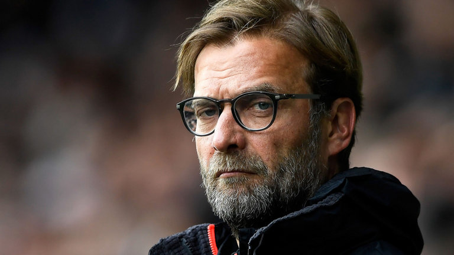
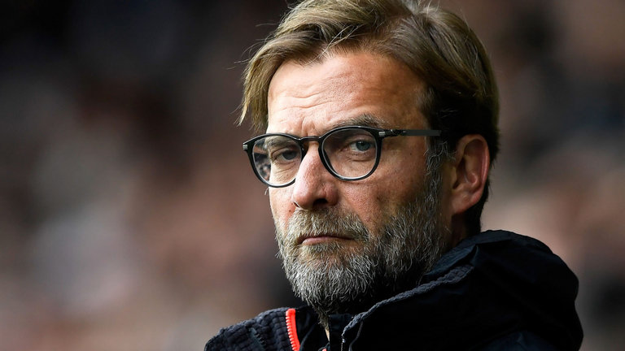
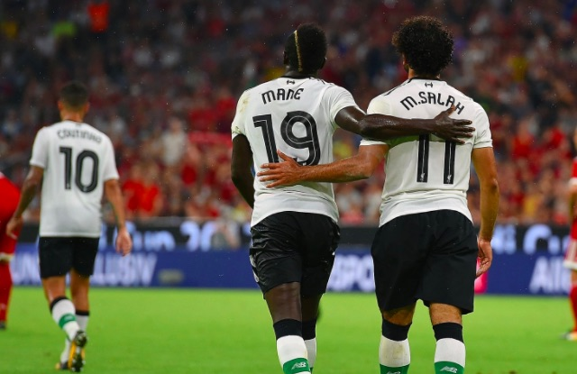

Liverpool Season Review 2017/18
With Jurgen Klopp's Intensity, is it finally Liverpool's year?

With Jurgen Klopp's Intensity, is it finally Liverpool's year?
A quick way to summarise Liverpool’s campaign during the 2016/17 season would be adequate. Although Jurgen Klopp expected to challenge for the title, the board’s minimum expectations were realised by securing Champions League football. The pressure of obtaining this in a competitive league caused the German coach to use his back-up players in the FA Cup, resulting in a shock exit to Championship side Wolves, and allowed the Anfield side to miss out on the EFL Cup final, by losing both legs of the semi-final to Southampton in woeful fashion. Often the side were involved in fixtures which saw them retain much of the ball -on average the Reds had 58.3% of the possession- and fail to use it decisively. Defeats to Burnley, Hull, Leicester and Swansea highlight their inconsistent nature, while wins against Manchester City, Chelsea and Tottenham Hotspur allowed glimpses of what the side could potentially achieve.
If Coutinho is to leave, it could fall to Roberto Firmino to drop back and fill the void of his international colleague’s departure, and he has already shown he can slot into the number ten role during his time at the club.
However, the capture of Salah shows that Klopp is aiming to make his side a lot more direct, and this tactic will play into his other notable capture during his time at the Liverpool, Sadio Mane. Sadio Mane has been a revelation since joining, and if the German coach is set to alter his tactic of retaining possession, which caused his side headaches when facing defensively minded sides who simply sat behind the ball, his use of the pair on the wings could be crucial to their fortunes this season and it could be a big year for Sadio Mane.
The summer-long attempt to sign Virgil van Dijk from Southampton gives us a clue to where Klopp believes the side need to strengthen the most. The side will want to play three or four at the back, depending on the opposition and on which formation is deemed the most effective against different opposition. If Klopp wants to play three at the back, the capture of another centre-back is vital, as the club only have Lovern, Matip, and Sakho as recognised central defenders, which could prove costly if no reinforcements can be arranged and injury or fatigue hits.
Should Liverpool retain Coutinho, Jurgen Klopp will have pulled off a major coup for his side and the pace of Mane and Salah will complement Emre Can and Coutinho’s ability. If he is to leave, Liverpool will drop Roberto Firmino back, and bring in a recognised striker to start up top, giving his wingers a target to hit.If Klopp is to use three at the back, it will allow one of his other summer captures, Andrew Robertson, to do what he does best. However, it involves Klopp bringing Sakho back from exile. A rampaging left-wing back paired with Clyne on the other side, Liverpool have some serious pace on the wings with the duo playing just behind Mane and Salah. Wing play could be crucial to the club’s potential for success this season.